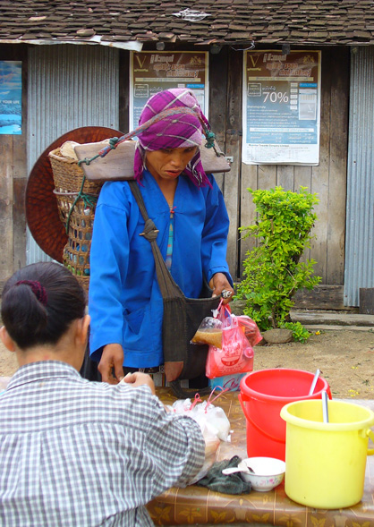

As luck would have it, a morning market takes place along the roadway immediately in front of Harry's Guesthouse. Here, many villagers from the surrounding tribes come to sell their produce, creating a daily photo opportunity for the few travelers who venture to this part of Myanmar. And less than a block away was a meeting place for workers needing transportation to the fields in the morning.
While walking around town, one is met with a dichotomy of sights; private cars are virtually non-existent, while Satellite TV and Solar water heaters were found on the rooftop of Harry's Guesthouse -- with more seen in the distance. Cell phones were found strictly in business locations, as the SIM card tax is over US$1000. Although a limited number of pre-packaged goods are now on the market, most purchases are stil measured from bulk containers and placed into plastic bags at considerable savings.
Some circles of influence encourage travelers to refrain from going to Myanmar, as the influx of money helps the illegitimate military government maintain power. But other circles say it is the only way the villagers will earn a livelihood and keep from starving. The most striking thing I noticed was the ability of some folks to adapt to the circumstances, and virtually everyone offered up the broadest of smiles when encountered along the streets. Though difficult to describe, this contagious atmosphere is why many visitors have returned time and again to Myanmar.
Photos, clockwise from the top: Market items from pencils to Peppers; Bulk purchases in plastic bags; Morning merchant smiles; Contemplation; Workers Awaiting Transportation to the Fields; Market Smile; Morning Market View Towards Town.

Enjoy!
Bill
